the and to of a was I in
coben_breaker 3.592 1.175 2.163 1.376 2.519 1.502 1.445 1.176
coben_dropshot 3.588 1.179 2.122 1.269 2.375 1.567 1.497 1.040
coben_fadeaway 3.931 1.445 2.200 1.213 2.306 1.323 1.330 1.198
coben_falsemove 3.625 1.613 2.134 1.237 2.401 1.375 1.346 1.109
coben_goneforgood 3.834 1.817 2.153 1.176 1.962 1.733 3.814 1.131
coben_nosecondchance 4.098 1.589 2.271 1.206 1.992 1.758 3.855 1.151
coben_tellnoone 4.102 1.790 2.031 1.246 2.176 1.418 3.499 1.162
galbraith_cuckoos 4.523 2.267 2.494 2.179 2.141 1.656 1.127 1.380
lewis_battle 5.051 3.405 2.138 2.138 1.960 1.511 0.902 1.284
lewis_caspian 4.865 3.592 2.153 2.144 2.168 1.353 1.115 1.212
lewis_chair 4.973 3.221 1.997 2.103 2.354 1.405 1.073 1.214
lewis_horse 4.885 3.487 2.306 2.224 2.322 1.403 1.195 1.298
lewis_lion 5.141 3.699 2.295 2.185 2.100 1.346 0.813 1.162
lewis_nephew 4.482 2.856 2.070 2.231 2.311 1.571 1.179 1.355
lewis_voyage 5.222 3.279 2.261 2.114 2.244 1.583 1.048 1.153
rowling_casual 4.749 2.639 2.625 2.108 1.763 1.646 0.561 1.443
rowling_chamber 4.415 2.344 2.352 1.877 2.001 1.481 0.882 1.168
rowling_goblet 4.483 2.426 2.486 2.022 1.791 1.423 0.849 1.117
rowling_hallows 4.696 2.473 2.244 1.870 1.449 1.126 0.525 0.995Distance Measures
how a comparison looks like, really
Maciej Eder
Polish Academy of Sciences | University of Tartu
What makes them different?
text A:
I have just returned from a visit to my landlord - the solitary neighbour that I shall be troubled with. This is certainly a beautiful country! In all England, I do not believe that I could have fixed on a situation so completely removed from the stir of society. A perfect misanthropist's heaven: and Mr. Heathcliff and I are such a suitable pair to divide the desolation between us. A capital fellow!text B:
OF MANS First Disobedience, and the Fruit
Of that Forbidden Tree, whose mortal tast
Brought Death into the World, and all our woe,
With loss of Eden, till one greater Man
Restore us, and regain the blissful Seat,
Sing Heav'nly Muse, that on the secret top
Of Oreb, or of Sinai, didst inspire
That Shepherd, who first taught the chosen Seed,
In the Beginning how the Heav'ns and Earth
Rose out of Chaos: or if Sion Hill
Delight thee more, and Siloa's Brook that flow'd
Fast by the Oracle of God; I thence
Invoke thy aid to my adventrous Song,how to compare a set of texts?
- extracting valuable (i.e. countable) language features from texts
- frequencies of words 👈
- frequencies of syllables
- versification patterns
- distribution of topics
- …
- comparing these features by means of multivariate analysis
- distance-based methods 👈
- neural networks
- …
from words to features
‘It is a truth universally acknowledged, that a single man in possession of a good fortune, must be in want of a wife.’
(J. Austen, Pride and Prejudice)
“the” = 3.52%
“to” = 3.39%
“of” = 2.94%
“a” = 1.59%
“in” = 1.53%
“was” = 1.50%
. . .
from features to representations
from representations to similarities
what we hope to get
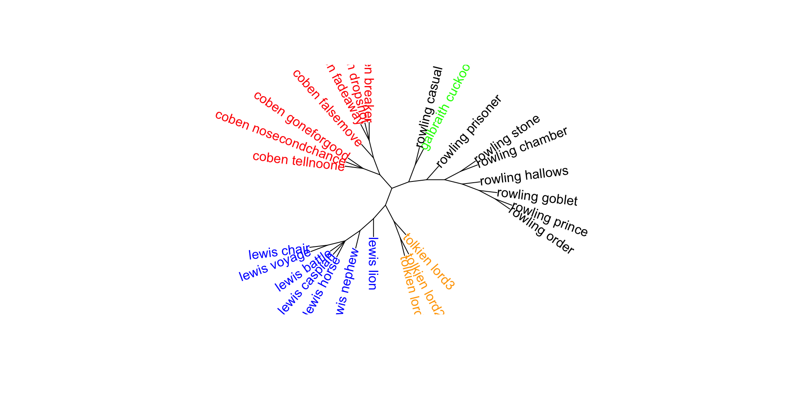some theory
what is a distance?
take any two texts:
the and to of a was I in he said you
lewis_lion 5.141 3.699 2.295 2.185 2.100 1.346 0.813 1.162 1.087 1.426 1.141
tolkien_lord1 5.624 3.782 2.074 2.597 1.916 1.313 1.492 1.419 1.221 0.825 0.872subtract the values vertically:
the and to of a was I in he said you
-0.483 -0.083 0.221 -0.412 0.184 0.033 -0.679 -0.257 -0.134 0.601 0.269then drop the minuses:
the and to of a was I in he said you
0.483 0.083 0.221 0.412 0.184 0.033 0.679 0.257 0.134 0.601 0.269sum up the obtained values:
[1] 3.356more theory
Burrows’s Delta
the mean of the absolute differences between the z-scores for a set of word-variables in a given text-group and the z-scores for the same set of word-variables in a target text.
Formulated in a formal way
Let assume we have two texts, \(A\) and \(B\), and a single feature (e.g. the word “the”) to be computed. The difference between \(a\) and \(b\) is then defined as:
\[ \delta = \left\vert a_{the} - b_{the} \right\vert \]
The simple idea behind Delta
\[\delta = \frac{\left\vert a_1 - b_1 \right\vert + \left\vert a_2 - b_2 \right\vert + ... + \left\vert a_n - b_n \right\vert}{n} \]
or conveniently:
\[\delta = \frac{1}{n} \sum_{i=1}^n{\left\vert a_i - b_i \right\vert} \]
pairwise similarities between texts
| Milton (Samson) | Milton (Paradise) | Keats (Hyperion) | Patmore (Eros) | Browning (Bishop) | |
|---|---|---|---|---|---|
| “the” | 4.57 | 4.24 | 4.25 | 4.19 | 4.47 |
| “to” | 3.11 | 3.29 | 3.43 | 3.14 | 3.71 |
| “and” | 3.19 | 3.0 | 3.08 | 2.85 | 2.81 |
| “of” | 2.6 | 3.0 | 2.63 | 2.43 | 2.86 |
| “I” | 2.17 | 2.2 | 2.13 | 2.42 | 2.22 |
| “a” | 2.24 | 1.92 | 1.92 | 2.21 | 1.92 |
| . . . | . . . | . . . | . . . | . . . | . . . |
pairwise similarities between texts
| Milton (Samson) | Milton (Paradise) | Keats (Hyperion) | Patmore (Eros) | Browning (Bishop) | |
|---|---|---|---|---|---|
| “the” | 4.57 | 4.24 | 4.25 | 4.19 | 4.47 |
| “to” | 3.11 | 3.29 | 3.43 | 3.14 | 3.71 |
| “and” | 3.19 | 3.0 | 3.08 | 2.85 | 2.81 |
| “of” | 2.6 | 3.0 | 2.63 | 2.43 | 2.86 |
| “I” | 2.17 | 2.2 | 2.13 | 2.42 | 2.22 |
| “a” | 2.24 | 1.92 | 1.92 | 2.21 | 1.92 |
| . . . | . . . | . . . | . . . | . . . | . . . |
pairwise similarities between texts
| Milton (Samson) | Milton (Paradise) | Keats (Hyperion) | Patmore (Eros) | Browning (Bishop) | |
|---|---|---|---|---|---|
| “the” | 4.57 | 4.24 | 4.25 | 4.19 | 4.47 |
| “to” | 3.11 | 3.29 | 3.43 | 3.14 | 3.71 |
| “and” | 3.19 | 3.0 | 3.08 | 2.85 | 2.81 |
| “of” | 2.6 | 3.0 | 2.63 | 2.43 | 2.86 |
| “I” | 2.17 | 2.2 | 2.13 | 2.42 | 2.22 |
| “a” | 2.24 | 1.92 | 1.92 | 2.21 | 1.92 |
| . . . | . . . | . . . | . . . | . . . | . . . |
pairwise similarities between texts
| Milton (Samson) | Milton (Paradise) | Keats (Hyperion) | Patmore (Eros) | Browning (Bishop) | |
|---|---|---|---|---|---|
| “the” | 4.57 | 4.24 | 4.25 | 4.19 | 4.47 |
| “to” | 3.11 | 3.29 | 3.43 | 3.14 | 3.71 |
| “and” | 3.19 | 3.0 | 3.08 | 2.85 | 2.81 |
| “of” | 2.6 | 3.0 | 2.63 | 2.43 | 2.86 |
| “I” | 2.17 | 2.2 | 2.13 | 2.42 | 2.22 |
| “a” | 2.24 | 1.92 | 1.92 | 2.21 | 1.92 |
| . . . | . . . | . . . | . . . | . . . | . . . |
pairwise similarities between texts
| Milton (Samson) | Milton (Paradise) | Keats (Hyperion) | Patmore (Eros) | Browning (Bishop) | |
|---|---|---|---|---|---|
| “the” | 4.57 | 4.24 | 4.25 | 4.19 | 4.47 |
| “to” | 3.11 | 3.29 | 3.43 | 3.14 | 3.71 |
| “and” | 3.19 | 3.0 | 3.08 | 2.85 | 2.81 |
| “of” | 2.6 | 3.0 | 2.63 | 2.43 | 2.86 |
| “I” | 2.17 | 2.2 | 2.13 | 2.42 | 2.22 |
| “a” | 2.24 | 1.92 | 1.92 | 2.21 | 1.92 |
| . . . | . . . | . . . | . . . | . . . | . . . |
pairwise similarities between texts
| Milton (Samson) | Milton (Paradise) | Keats (Hyperion) | Patmore (Eros) | Browning (Bishop) | |
|---|---|---|---|---|---|
| “the” | 4.57 | 4.24 | 4.25 | 4.19 | 4.47 |
| “to” | 3.11 | 3.29 | 3.43 | 3.14 | 3.71 |
| “and” | 3.19 | 3.0 | 3.08 | 2.85 | 2.81 |
| “of” | 2.6 | 3.0 | 2.63 | 2.43 | 2.86 |
| “I” | 2.17 | 2.2 | 2.13 | 2.42 | 2.22 |
| “a” | 2.24 | 1.92 | 1.92 | 2.21 | 1.92 |
| . . . | . . . | . . . | . . . | . . . | . . . |
pairwise similarities between texts
| Milton (Samson) | Milton (Paradise) | Keats (Hyperion) | Patmore (Eros) | Browning (Bishop) | |
|---|---|---|---|---|---|
| “the” | 4.57 | 4.24 | 4.25 | 4.19 | 4.47 |
| “to” | 3.11 | 3.29 | 3.43 | 3.14 | 3.71 |
| “and” | 3.19 | 3.0 | 3.08 | 2.85 | 2.81 |
| “of” | 2.6 | 3.0 | 2.63 | 2.43 | 2.86 |
| “I” | 2.17 | 2.2 | 2.13 | 2.42 | 2.22 |
| “a” | 2.24 | 1.92 | 1.92 | 2.21 | 1.92 |
| . . . | . . . | . . . | . . . | . . . | . . . |
Multivariate aka multidimensional
The features (“the”, “to”, “and”, …) are sometimes called variables.
Consequently, the methods in question are multivariate.
More intriguing is the name multidimensional.
Should I be afraid of multidimensionality? (well, you were there already, and you dind’t even blink!)
multidimensionality
Two texts, one dimension (i.e. one word)
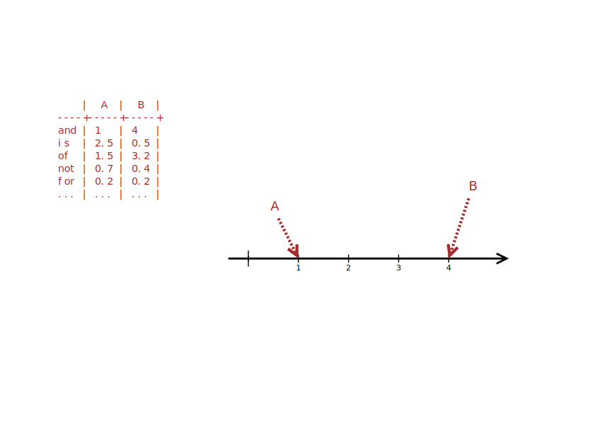
Two texts, one dimension, one difference
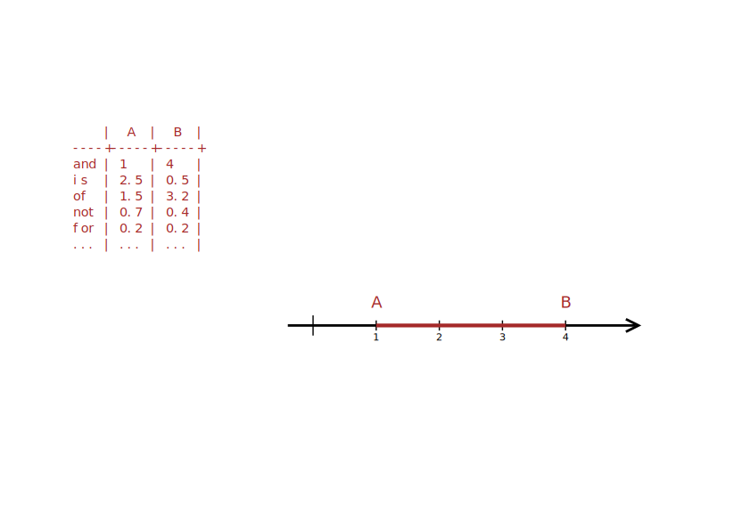
Two texts and two dimensions
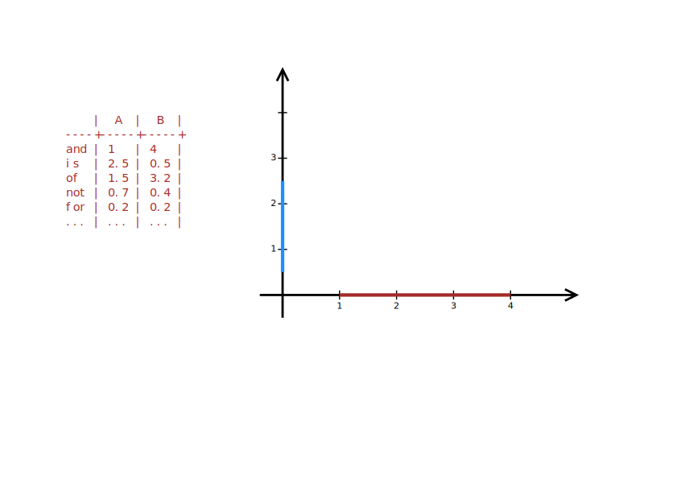
Constructing a two-dimensional space
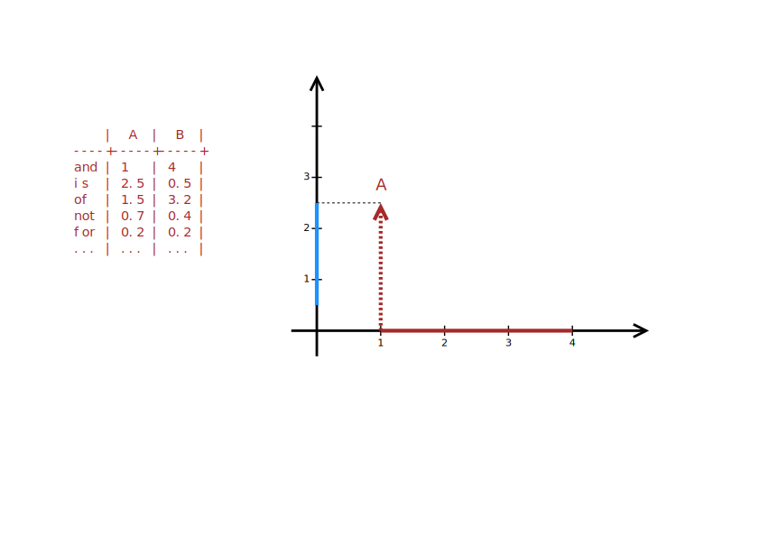
Constructing a two-dimensional space
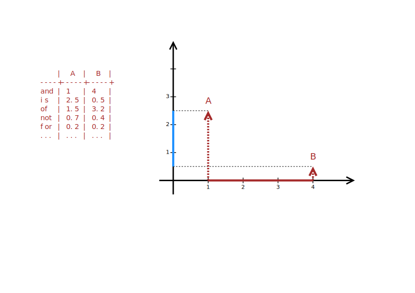
Two texts, two dimensions
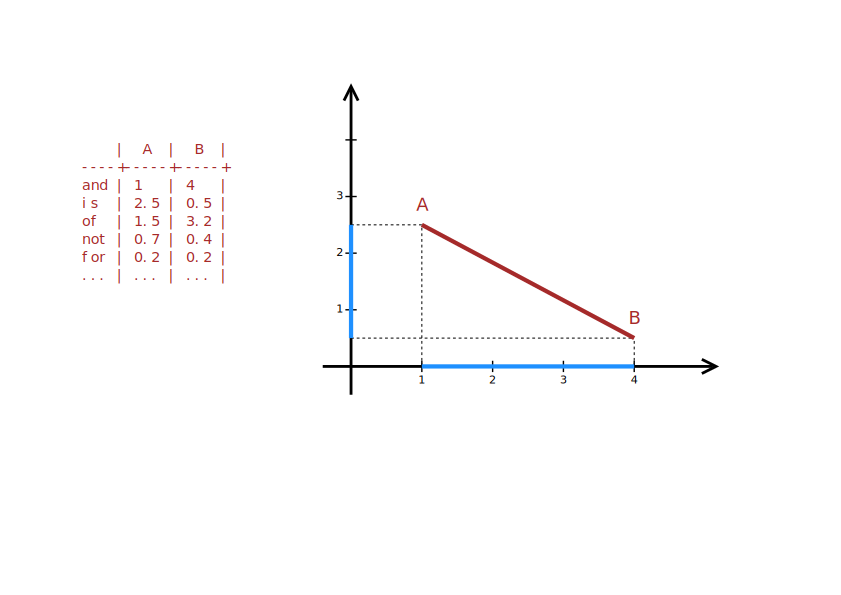
Two texts and three dimensions
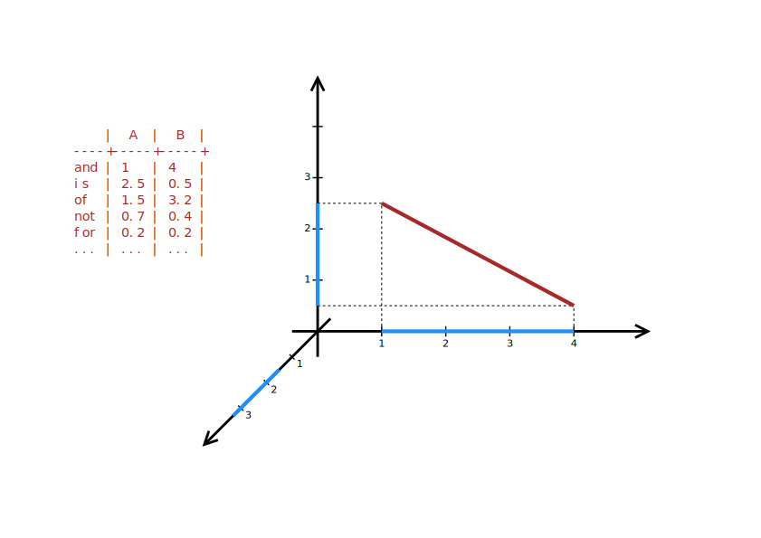
Constructing a three-dimensional space
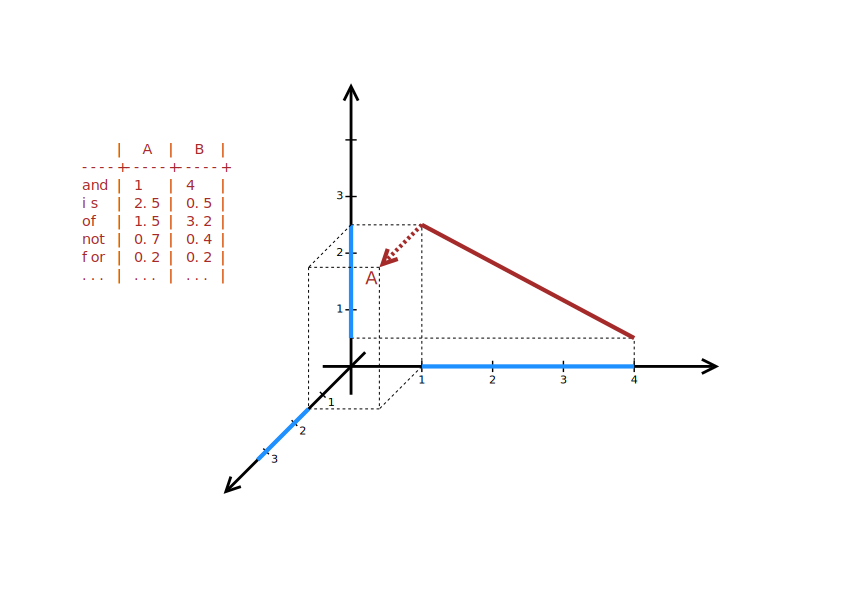
Constructing a three-dimensional space
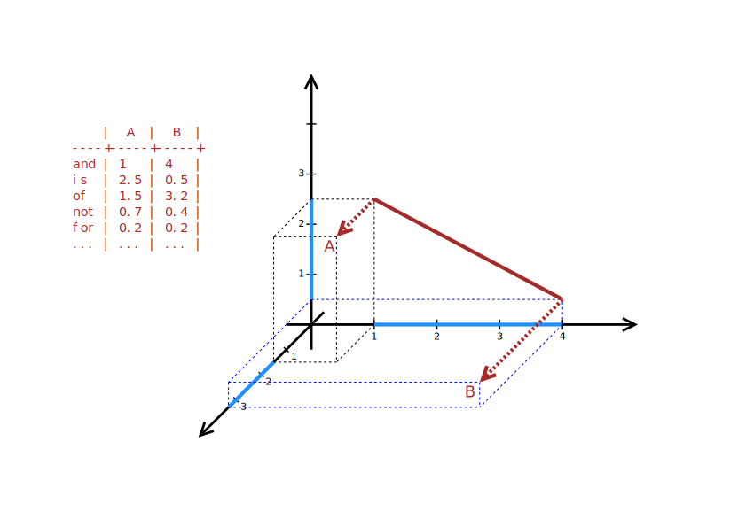
Constructing a three-dimensional space
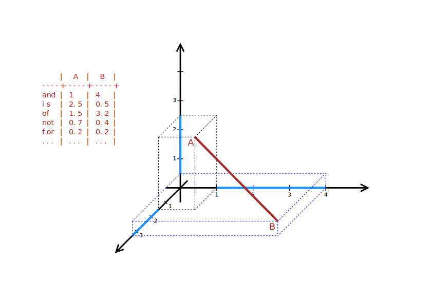
Introducing the fourth dimension
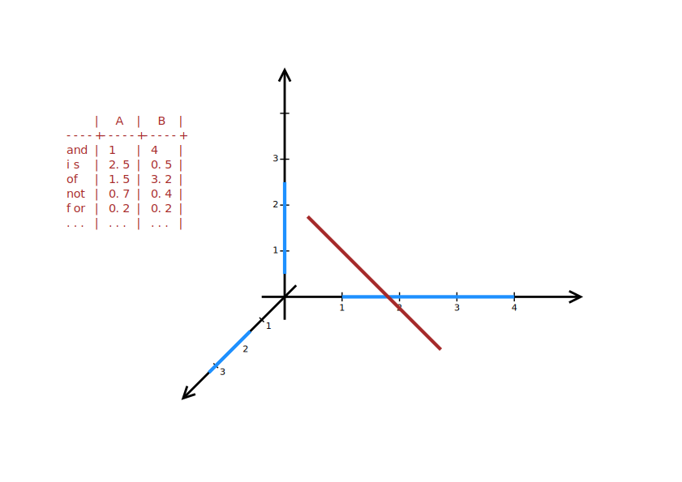
Introducing the fourth dimension
four-dimensional space:
\[\delta = \frac{\left\vert a_1 - b_1 \right\vert + \left\vert a_2 - b_2 \right\vert + \left\vert a_3 - b_3 \right\vert + \left\vert a_4 - b_4 \right\vert}{4} \]
five-dimensional space:
\[\delta = \frac{\left\vert a_1 - b_1 \right\vert + \left\vert a_2 - b_2 \right\vert + \left\vert a_3 - b_3 \right\vert + \left\vert a_4 - b_4 \right\vert + \left\vert a_5 - b_5 \right\vert}{5} \]
\(n\)-dimensional space:
\[\delta = \frac{\left\vert a_1 - b_1 \right\vert + \left\vert a_2 - b_2 \right\vert + ... + \left\vert a_n - b_n \right\vert}{n} \]
distances in a space
closest possible distance
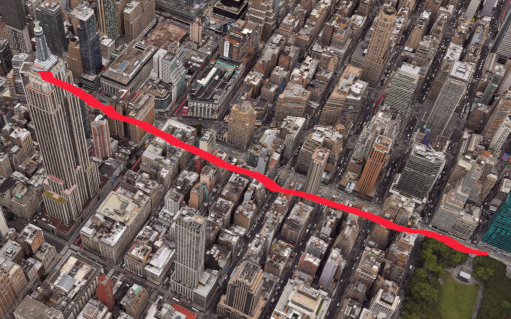actual distance to pass

Manhattan vs. Euclidean

which distance, then?